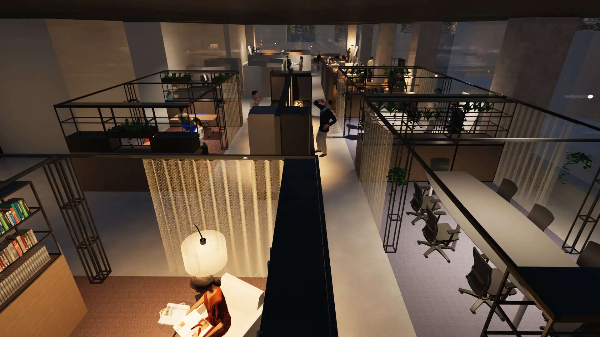

🏆 受賞作品 Vista in the Sky ただ空を見る——静けさを味わう展望空間 課題：都市生活で空に目を向ける余白がない。 着眼：上野の隅に「空を見る」場を設計。 成果：森田祥子賞受賞、心を整える休憩空間。 期間2025.04–07 規模上野公園・小規模施設 役割Solo 提出模型 / 図面 / レイアウト View case →
 HUB of SENSES 五感で“仕事モード”へ切り替えるオフィス 課題：入室直後に集中できない。 着眼：色温・輝度対比・香りで切り替えを設計。 成果：導線短縮、グレア抑制。 期間2025.04–06 規模約150㎡ 役割Lead 提出Layout / Render / 動画 View case →
The Coffee Gallery 誰でも立ち寄れる開かれたクルマ体験空間 課題：ブランド体験が閉鎖的で入りづらい。 着眼：カフェとギャラリーを融合し、敷居を下げる。 成果：滞在時間を伸ばしブランド接点を創出。 期間2024.09–12 規模約200㎡ 役割Team 提出Layout / Render / 模型 View case →